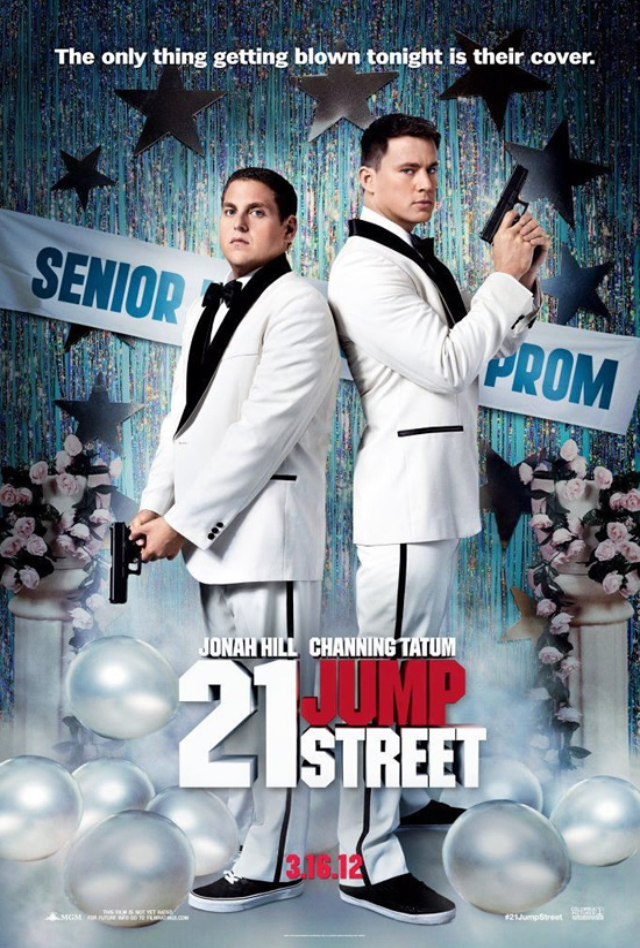

Anjos da Lei (2012)

Direção: Phil Lord e Christopher Miller
Distribuição: Columbia Pictures
Lançamento:
 16 de março de 2012
16 de março de 2012
 4 de maio de 2012
4 de maio de 2012  ASSISTIR
ASSISTIR
Personagens


Direção: Phil Lord e Christopher Miller
Distribuição: Columbia Pictures
Lançamento:
16 de março de 2012
4 de maio de 2012 ASSISTIR